Страницы целиком: десктоп 1440 px
Семь страниц в светлой схеме при ширине окна 1440 пикселей. Снимки сделаны целиком, в масштабе 2×; длинные страницы прокручиваются внутри рамки.
Главная

fs-5xl: при 1440 пикселях он отрисован в 64 px, на телефоне сожмётся до 48 без единого медиазапроса. Правее — карточка card-translucent со степпером выпуска и стопкой аватаров. Ниже сетка CSS Grid «восемь плюс четыре»: большой материал и три горизонтальные карточки card-row, у каждой из которых ссылка растянута на всю карточку классом stretched-link. Дальше три карточки рубрик на flex-сетке md:row-cols-3, демонстрация контейнерных запросов, площадка токенов и форма подписки.Рубрика «Технологии»

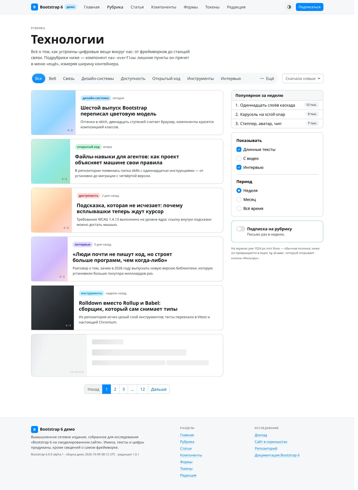
nav-overflow: девять пунктов не помещаются, и плагин убрал «Архив» в меню «Ещё», измерив ширину обёртки. Справа комбобокс сортировки — кнопка combobox-toggle с меню на Floating UI. Лента — горизонтальные карточки с мягкими значками badge-subtle, замыкает её скелет placeholder-wave. Боковая колонка — отзывчивый ящик lg:drawer, который при 1440 пикселях стоит обычным блоком.Статья

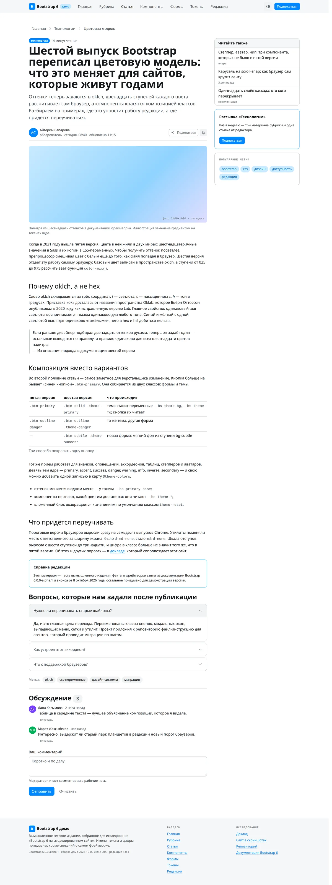
breadcrumb-divider, заголовок fs-4xl, строка автора с аватаром из инициалов. Тело статьи — класс prose: абзацы, цитата с подписью blockquote-footer, таблица, список получили оформление без единого класса на элементе. Ниже аккордеон вопросов на <details>, чипы меток, обсуждение и форма комментария. Правая колонка липкая: lg:sticky-top.Витрина компонентов

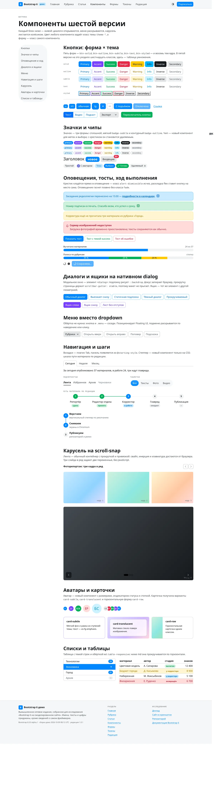
nav-pills flex-column, прилипшие к верху. Матрица кнопок пять форм на восемь тем, значки трёх форм, чипы, четыре оповещения с темами, полоса хода и стопка полос, спиннеры, кнопки, открывающие диалоги и ящики, меню, вкладки, подчёркнутая и таблеточная навигация, два степпера, две карусели, аватары, три варианта карточек, список и таблица в обёртке md:table-responsive.Формы

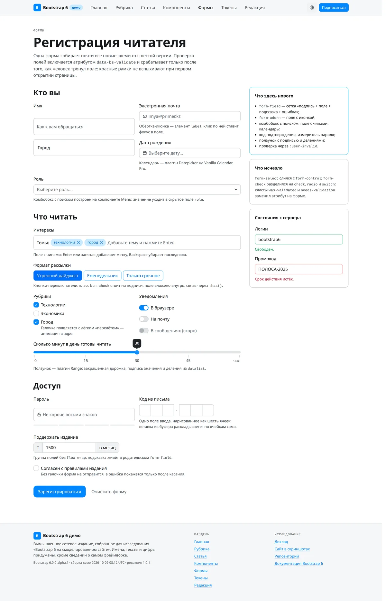
form-field; обёртки с иконками — form-adorn; плавающая подпись «Город»; комбобокс роли с поиском; поле с чипами; кнопки-переключатели формата рассылки; флажки и переключатели с описаниями; ползунок с подписью значения и делениями; измеритель пароля; код подтверждения в шесть ячеек; группа ввода с тенге. Справа памятка о новом и исчезнувшем и два серверных состояния is-valid и is-invalid.Токены и темы

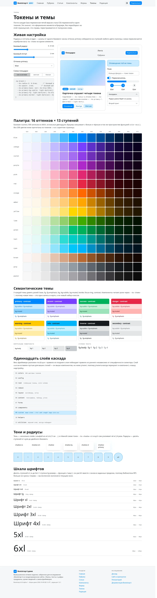
bg-1–bg-4 и ступени текста, лестница из одиннадцати слоёв каскада, шесть теней, одиннадцать радиусов, шкала шрифтов с вычисленными размерами.Редакционная панель

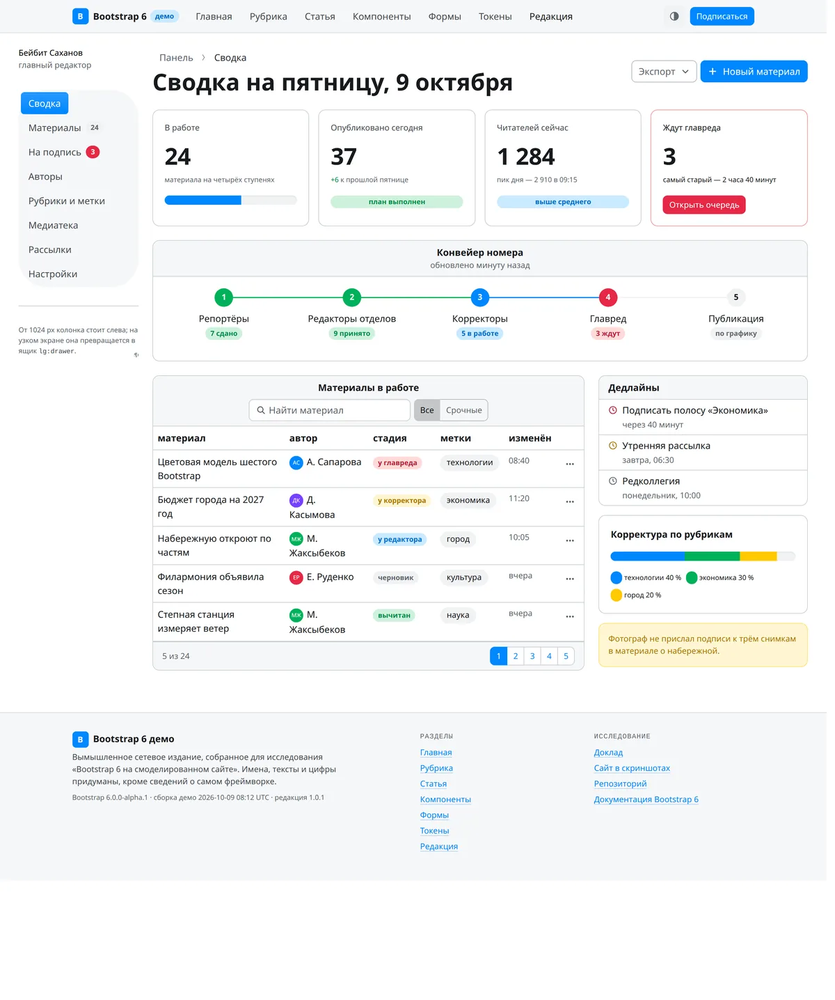
lg:flex-column. Четыре карточки показателей, одна из них card-subtle theme-danger; степпер конвейера с подписями-значками на каждом шаге; таблица материалов с аватарами, значками стадий, чипами меток и меню действий; дедлайны, стопка полос корректуры и предупреждение.Тёмная схема
Тёмная схема включена эмуляцией системного предпочтения prefers-color-scheme: dark, а не атрибутом. В стилях сайта нет ни одного правила для тёмной темы: пары light-dark() в токенах ядра выбрали вторые значения сами.
Главная в тёмной схеме

bg-body и bg-1 стали почти чёрными, текст — светлым, мягкие значки и карточки с темами перешли на ступени 900 и 800 своих оттенков. Градиенты-заглушки тоже потемнели, потому что собраны из токенов --bs-primary-bg-subtle и соседних. Тени углубились токеном --bs-shadow-strength.Панель в тёмной схеме

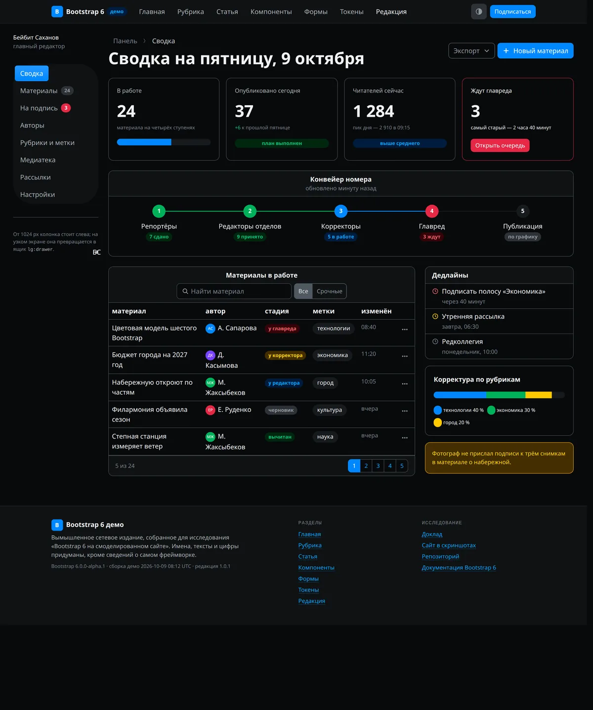
Витрина в тёмной схеме, первый экран

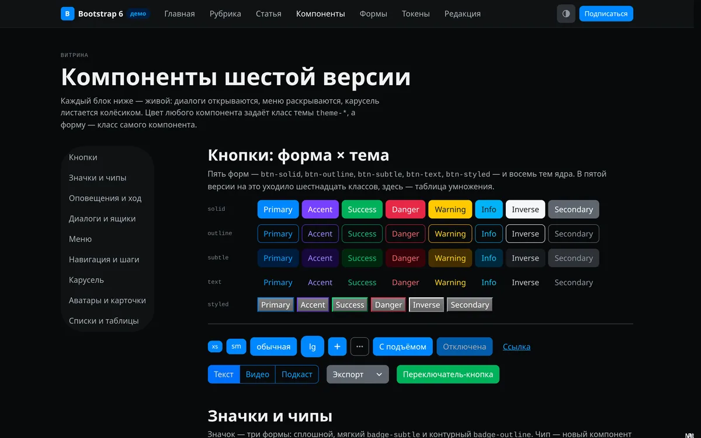
fg, тема inverse стала светлой кнопкой с тёмным текстом — роль contrast перевернулась вместе со схемой.Восемь тем в тёмной схеме

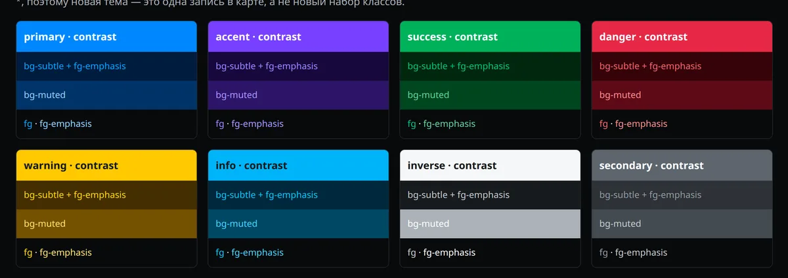
$theme-colors и не требует правок.Открытые состояния
Снимки видимой области после действия пользователя: клик, наведение, ввод. Всё, что открыто, — настоящие компоненты в работе, а не нарисованные макеты.
Диалог «Поделиться»

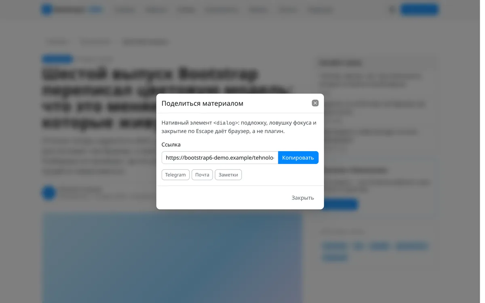
<dialog>: подложка с размытием нарисована псевдоэлементом ::backdrop, страница за ним инертна, фокус заперт браузером. Внутри группа ввода со ссылкой и кнопкой «Копировать», которая кладёт адрес в буфер и показывает тост. Полоса прокрутки страницы не исчезла и макет не прыгнул — заслуга scrollbar-gutter: stable.Тёмный диалог на светлой странице

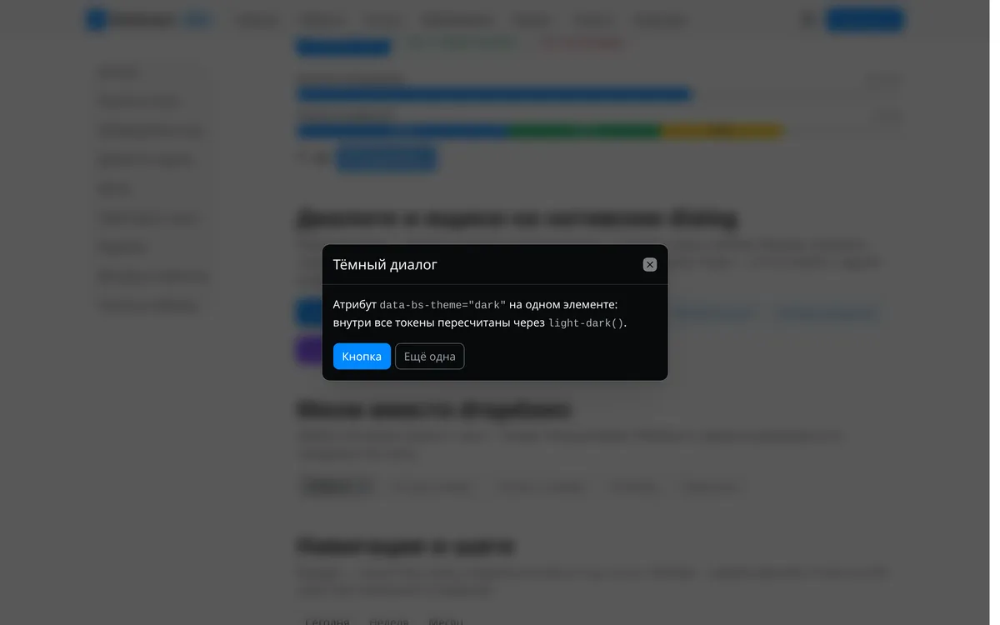
data-bs-theme="dark" стоит только на диалоге: внутри него все токены пересчитаны, снаружи страница светлая. Так можно темнить одно окно, одну карточку или одну колонку.Меню с подменю

menu-header, разделителем и подменю «Спецпроекты», раскрытым по наведению. Обёртки dropdown нет: кнопка и меню — соседние элементы, позицию считает Floating UI. Рядом ещё два меню с направлением через data-bs-placement, поповер и подсказка.Ящик слева

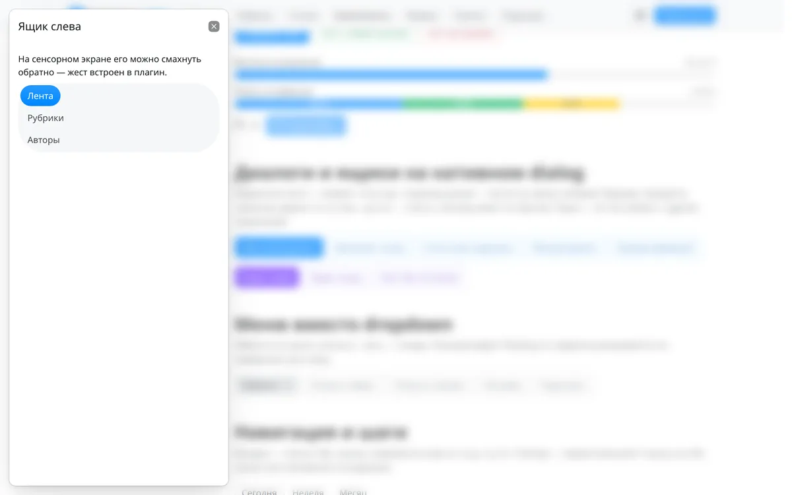
<dialog>, что у диалога, но с геометрией drawer-start: отступ от края, скругление, тень, подложка. На сенсорном экране его можно смахнуть обратно — жест встроен в плагин.Комбобокс сортировки

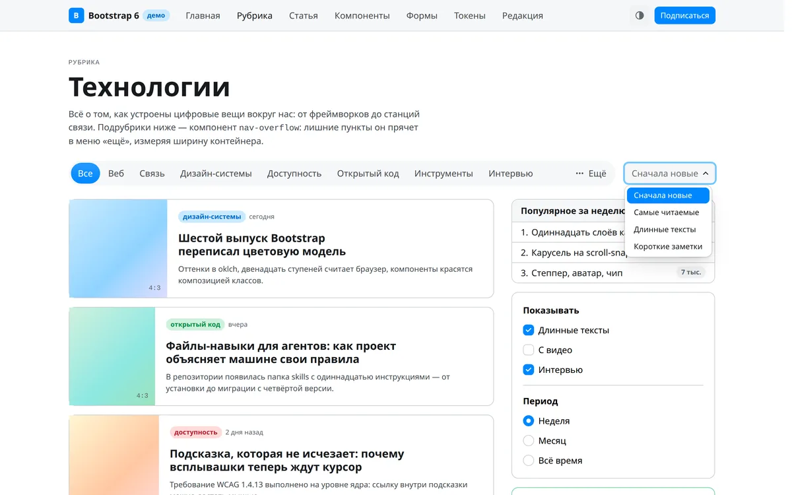
sort. В консоли при загрузке страницы ядро пишет ошибку о втором экземпляре — она разобрана в докладе и занесена в реестр М-01.Календарь

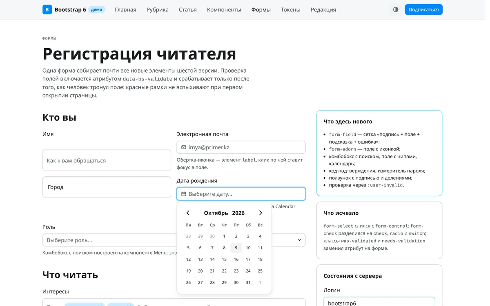
Форма после отправки с ошибками

data-bs-validate включил стили :user-invalid: подсвечены только тронутые поля. Поле с чипами приняло метку «дизайн», измеритель оценил пароль как «Хороший» (подписи переведены атрибутом data-bs-messages), код разложился по ячейкам 3+3, тост внизу сообщил об ошибках.Площадка токенов после перестройки

Контейнерный запрос: рамка сжата до 45 процентов

contains-inline сжата ползунком, и группа карточек сложилась в столбик, а список внизу остался вертикальным, потому что его порог — 1024 пикселя ширины контейнера. Это невозможно сделать медиазапросом: он знает только ширину окна.Три тоста

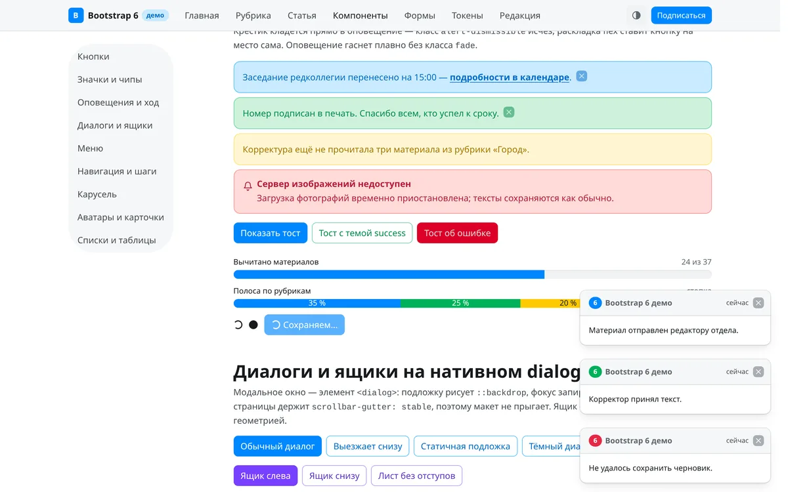
toast-container в правом нижнем углу: обычное, с темой success и об ошибке. Появляются из @starting-style, исчезают через четыре секунды; метод show() вернул промис.Крупные планы
Фрагменты страниц, снятые по границам элемента с небольшим полем.
Матрица кнопок

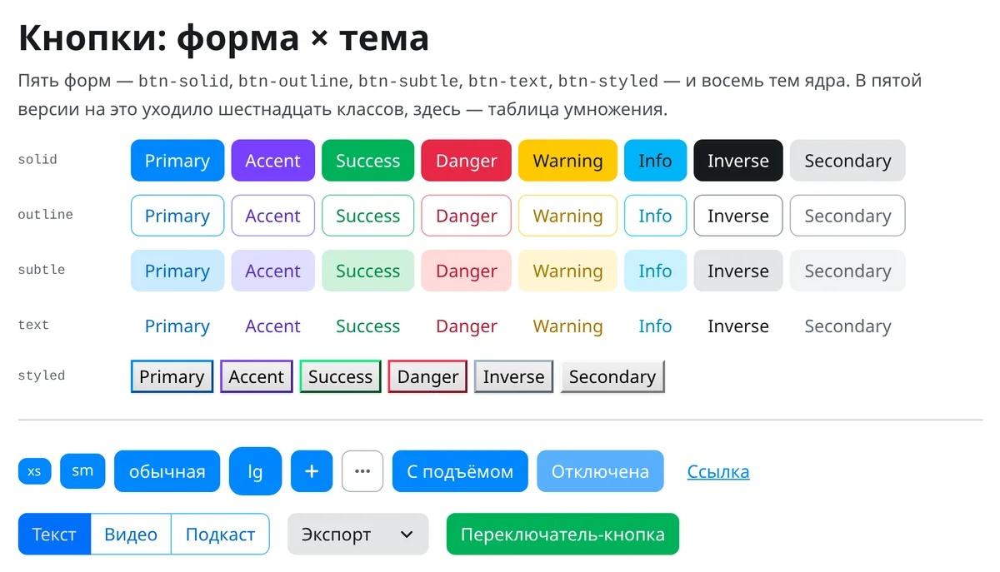
btn-outline-danger; здесь любая ячейка — два класса. Ниже размеры от xs до lg, квадратная btn-icon, кнопка с подъёмом, отключённая, кнопка-ссылка, группа переключателей на btn-check и разделённая кнопка с меню.Значки и чипы

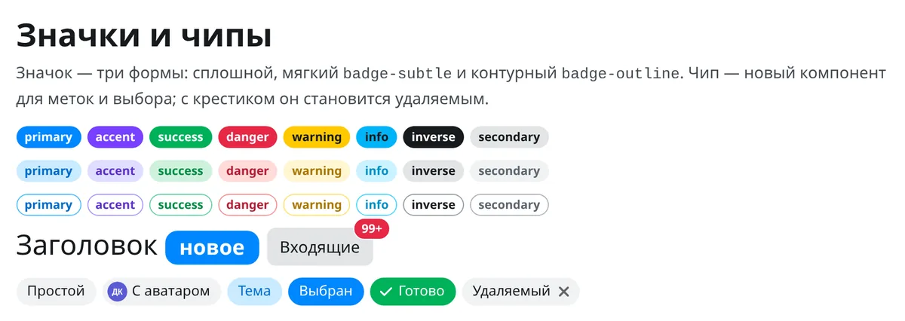
Навигация и шаги

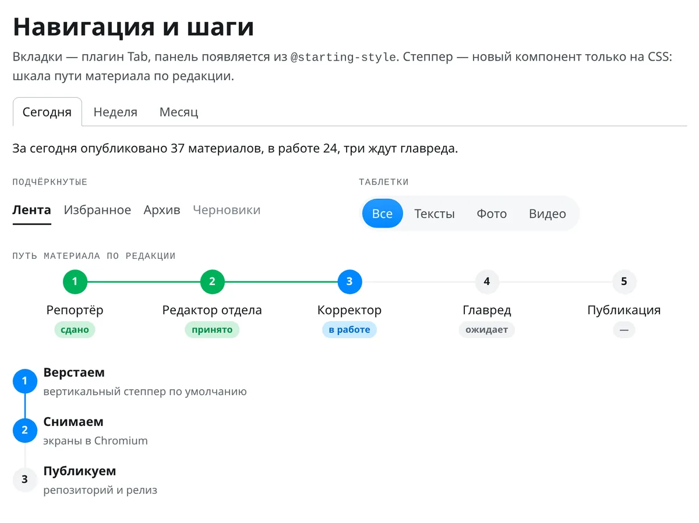
Аватары и карточки

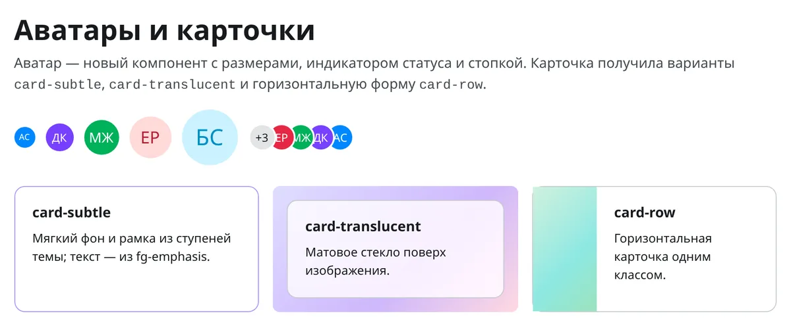
Палитра 16 × 13

--bs-{оттенок}-{ступень}. Базовая ступень 500 записана в oklch, остальные — color-mix() с белым и чёрным в том же пространстве, поэтому строки выглядят равномерными по светлоте.Одиннадцать слоёв каскада

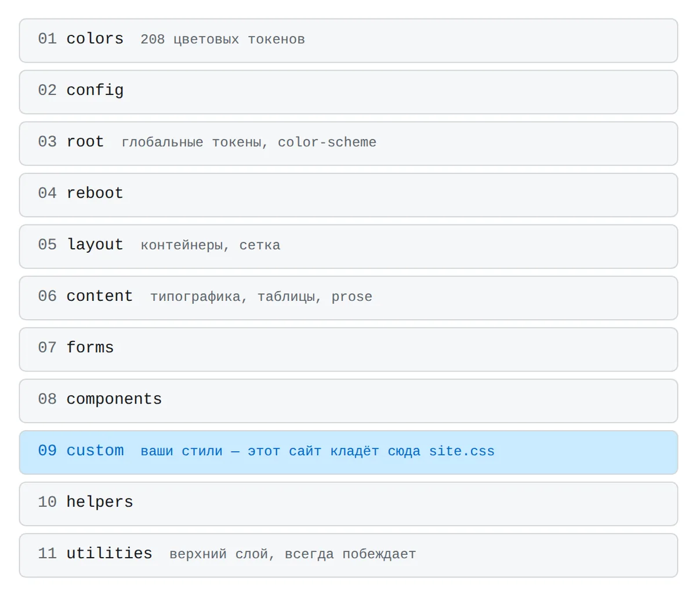
_root.scss: от colors до utilities. Слой custom подсвечен — в нём лежит site.css демо-сайта.Навбар на десктопе

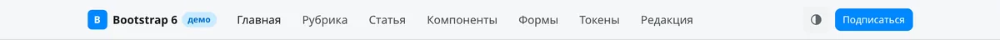
md:navbar-expand разложил содержимое ящика в строку: ссылки слева, переключатель схемы и кнопка подписки справа. Ниже md тот же элемент станет ящиком — см. снимок 28.Герой главной

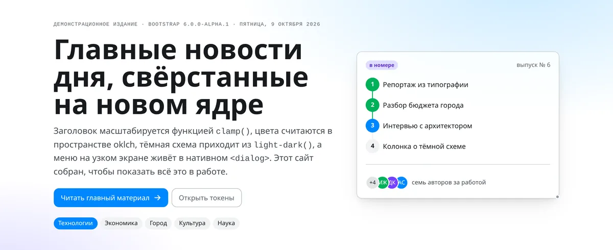
--bs-primary-bg-subtle и --bs-accent-bg-subtle. Заголовок с text-balance, подзаголовок с text-pretty, две кнопки размера lg, пять чипов, карточка матового стекла.Карусель после перелистывания

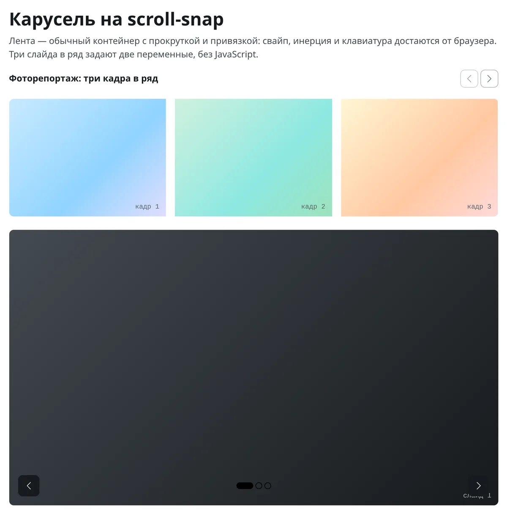
--bs-carousel-items: 3 и --bs-carousel-items-gap: 1rem; кнопка «вперёд» прокрутила ленту на один кадр. Лента — контейнер с привязкой прокрутки, поэтому колёсико и свайп работают без плагина. Ниже карусель с наложенными элементами управления и индикаторами в тёмной схеме.Телефон 390 px
Экран телефона 390 на 844 пикселя при масштабе 2×, с эмуляцией сенсорного ввода. Страницы сняты целиком.
Главная на телефоне


clamp(). Сетка CSS Grid разложилась в одну колонку — после того как к md:g-col-8 и md:g-col-4 добавлен базовый g-col-12; без него элемент занимал одну двенадцатую ширины. Группа карточек в демонстрации контейнерных запросов стоит столбиком, потому что обёртка уже 576 пикселей.Рубрика на телефоне

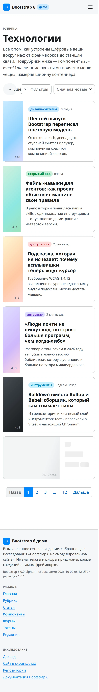
Статья на телефоне


prose читается без горизонтальной прокрутки, таблица внутри неё переносит строки. Аккордеон, чипы и форма комментария легли в одну колонку.Витрина на телефоне


d-none lg:d-block. Матрица кнопок переносится по строкам, таблица в обёртке md:table-responsive получила горизонтальную прокрутку, карусель показывает три узких кадра.Формы на телефоне

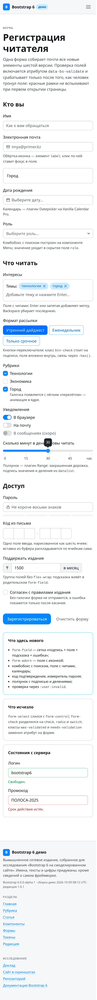
grid встали в одну колонку благодаря базовому g-col-12. Код подтверждения в шесть ячеек поместился в ширину, памятка из боковой колонки ушла вниз.Токены на телефоне


overflow-x-auto, остальные блоки легли в колонку. Кнопки выбора схемы в группе ужались.Панель на телефоне

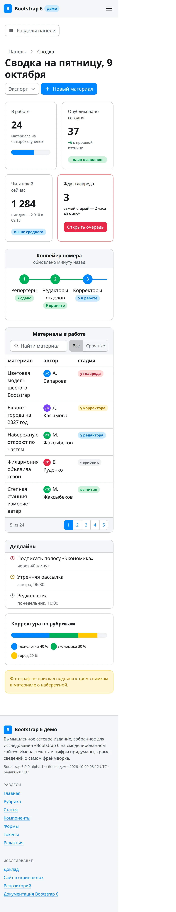
sm:row-cols-2, степпер конвейера прокручивается внутри stepper-overflow, таблица — внутри md:table-responsive.Меню сайта на телефоне

drawer-end с заголовком, кнопкой закрытия, семью ссылками, переключателем схемы и кнопкой подписки. Это тот же элемент <dialog>, что в навбаре на десктопе, — он лишь сменил раскладку.Ящик фильтров рубрики

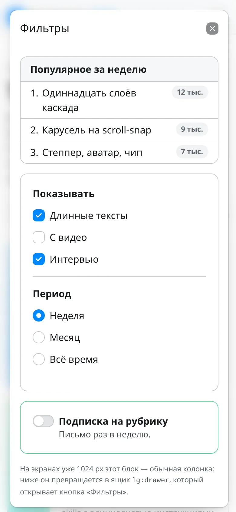
lg:drawer в раскрытом состоянии: список популярного, флажки, радиокнопки периода, переключатель подписки. Кнопка закрытия нашла свой ящик без data-bs-target.Разделы панели в ящике

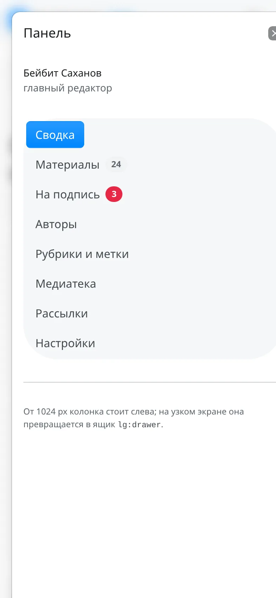
drawer-start: профиль, меню со счётчиками, пояснение. Заголовок ящика, скрытый на десктопе классом lg:d-none, здесь виден.Главная на телефоне в тёмной схеме

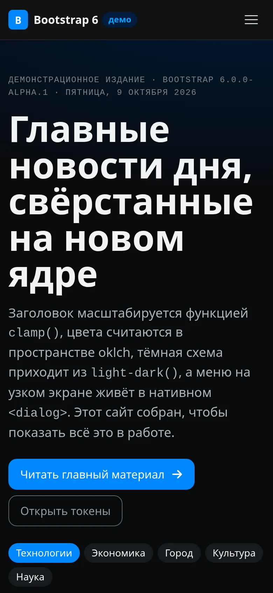
Диалог, выезжающий снизу

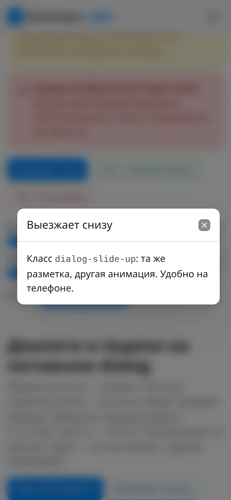
dialog-slide-up на телефоне: окно поднялось от нижнего края, как системный лист действий. Разметка та же, что у обычного диалога.Статья на телефоне в тёмной схеме

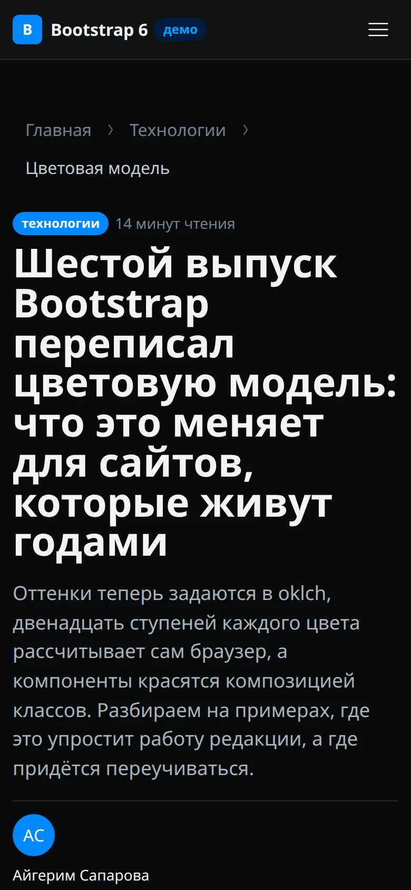